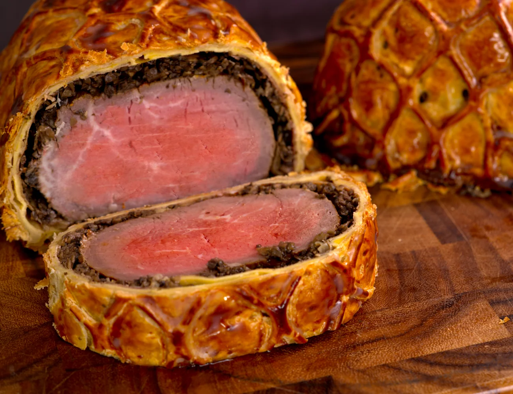

Beef Wellington

Juicy, tender and succulent!
Only 5 parts to make this dish that will leave you wanting for more! Lets start from the inside and work our way towards the outside.
Ingredients
- Beef tenderloin
- Duxelle (finely chopped mixed mushrooms)
- Prosciutto di Parma
- Crepe 16" x 12"
- 2x puff pastry 16" x 12"
Steps
- Prepare a 20 cm cut of beef tenderloin, season it well with salt and wrap with plastic. Rest for 2 hours to allow the salt to penetrate the meat. Afterwards, sear on all sides over high heat and allow to rest.
- Choose mushrooms of your liking and chop finely. Cook in a pan to remove the moisture and put aside.
- Start with a crepe that is 16" x 12" and cover with thin slices of Prosciutto di Parma.
- Evenly spread a thin layer of duxelle all over the crepe.
- Place the beef tenderloin on top of the duxelle and tightly wrap it in the crepe.
- Wrap the whole crepe in plastic wrap and further wrap by twisting the ends of the plastic wrap (the tigher the better!). Rest in refrigerator for 1 hour.
- Lay out the puff pastry and brush the inside with a thin layer of egg wash. Wrap the crepe well and trim with a knife leaving enough pastry on the side to seal with a fork.
- Fold the sides of the puff pastry under and apply egg wash all over the outside.
- (Optional)Lattic shape decoration with the under puff pastry. Trim the decoration to size and apply egg wash.
- Season the top with course ground sea salt which will help to crust up the puff pastry even more.
- Bake the beef wellington on a baking tray at 400 Fahrenheit for 20-25 minutes for a medium rare cook. Internal temperature should be around 118 Fahrenheit. Always remember to allow time for rest before slicing.